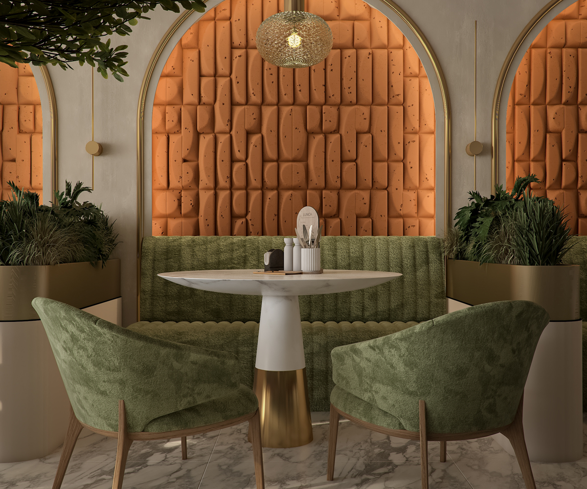
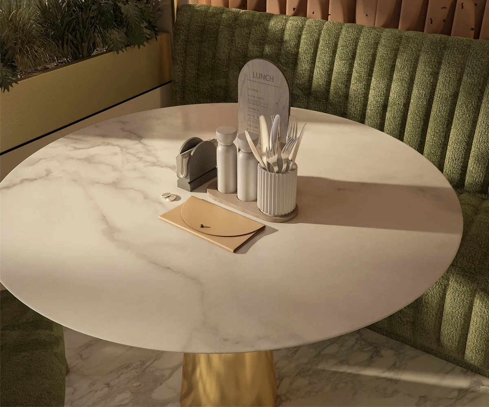
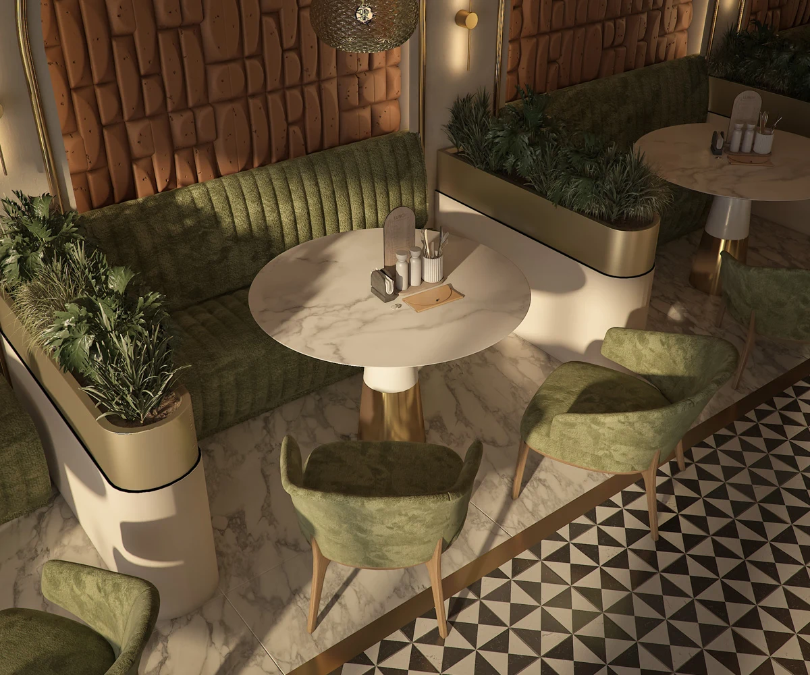
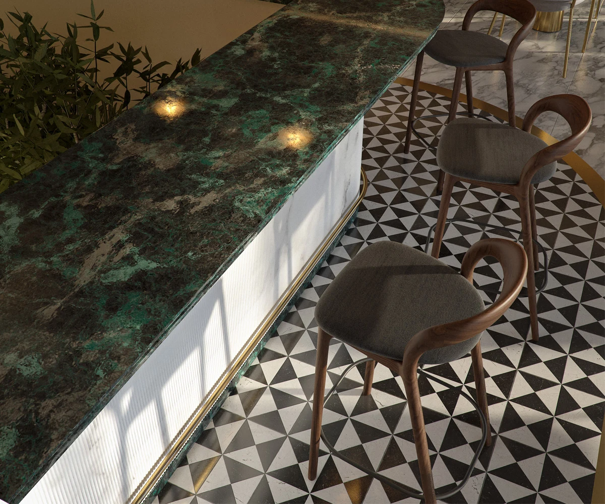
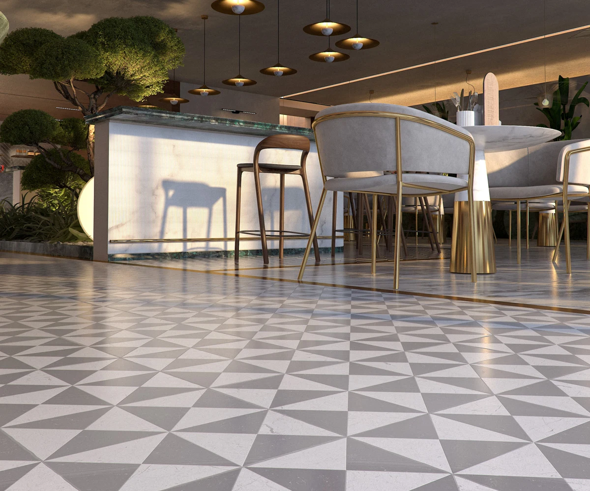
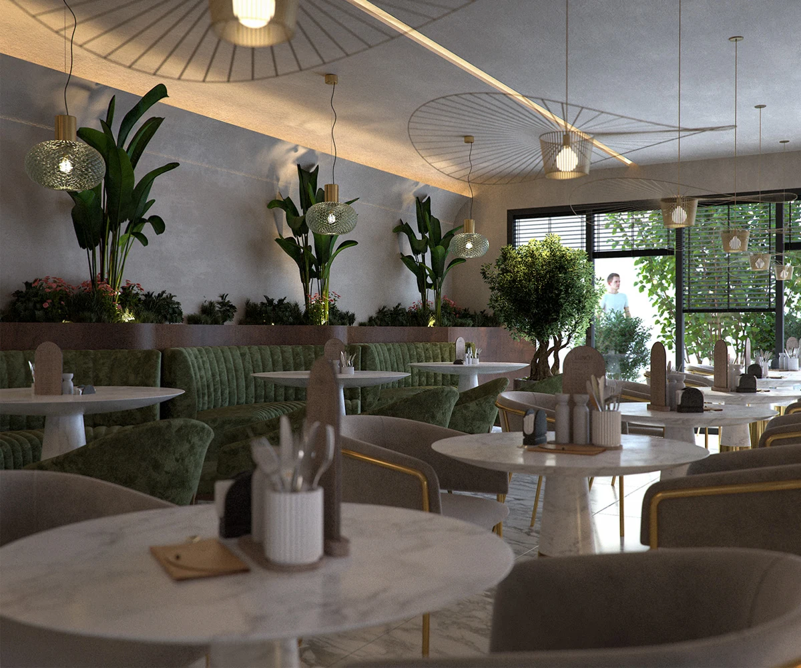
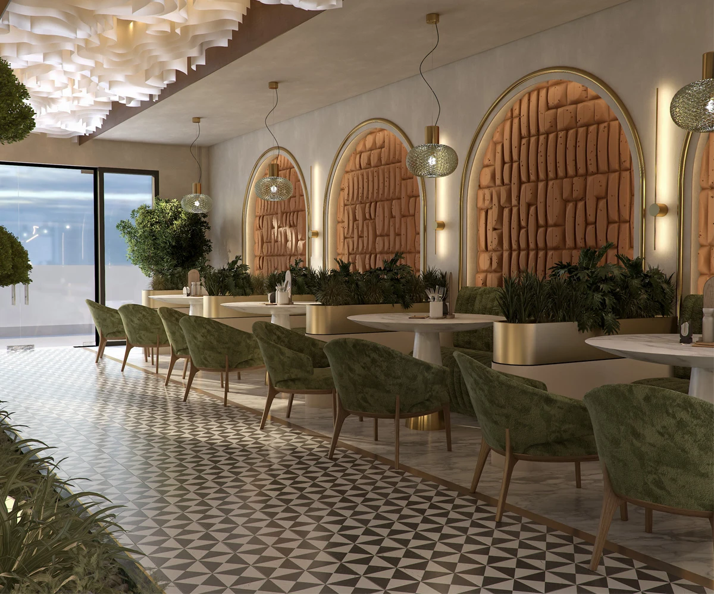
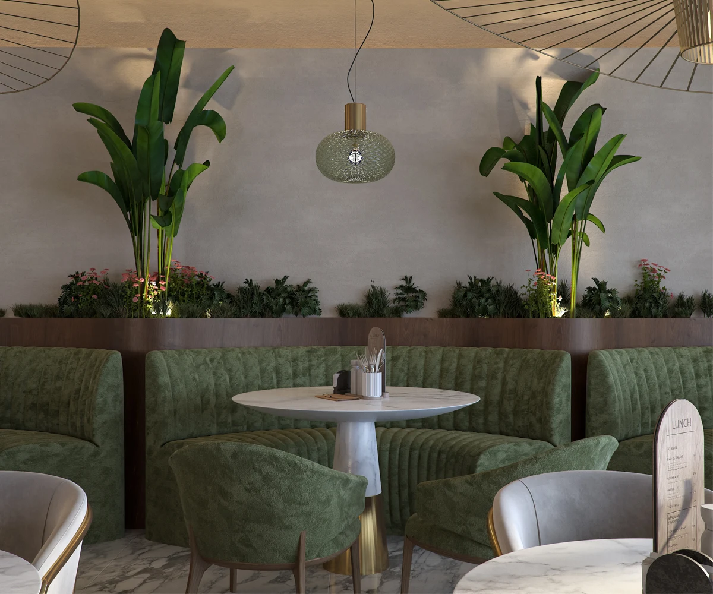

Commercial · Saudi Arabia
Dolce Divano
The Concept
Comfort refined through proportion and texture.
The commercial brief called for an environment that could support product presentation without feeling overly staged. Generous forms, layered neutrals and tactile materials create a relaxed atmosphere while proportion and circulation keep the interior architecturally disciplined.
Commercial Interior Design
Commercial Interior Design in Saudi Arabia, shaped around comfort and materiality.
Dolce Divano explores commercial interior design through proportion, texture and material continuity. The space is developed to support product presentation while retaining the warmth and ease expected from a furniture environment.






Design Resolution
Softness, continuity and measured detail.
The material palette was kept deliberately restrained so the products and spatial experience could remain legible. Upholstered forms, warm neutrals and balanced surfaces create depth without visual noise, allowing comfort and commercial clarity to coexist.




A quieter kind of luxury
Comfort can be architectural.
The project demonstrates how softness, material continuity and measured detailing can create a commercial interior with a distinct but understated identity.